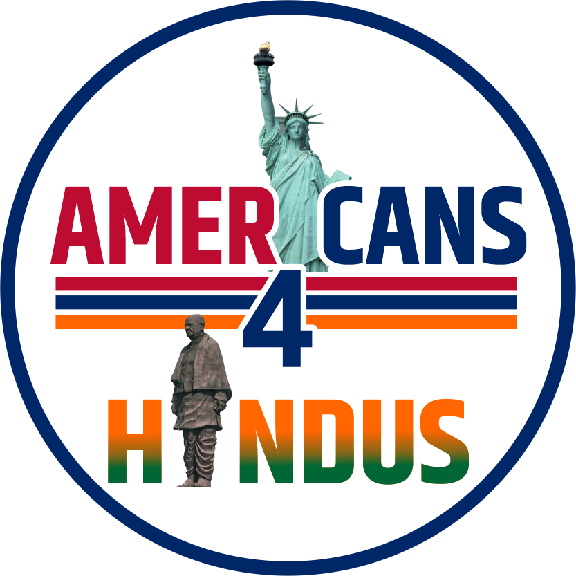

Five million Indian Americans. A fraction of a cent per person in political infrastructure. A4H exists to close that gap — through membership, endorsements, and voter research.
Endorsements and voter tools for the 2026 election cycle.